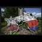

<!DOCTYPE html>
<html lang="en">
 <head>
<!-- Favicon -->
<link rel="shortcut icon" href="../../favicon.ico">
  <meta charset="utf-8"/>
  <title>
   Wikipedia as Propaganda Not History  MH17 as an Example
  </title>
  <meta content="Post on /v/Conspiracy from 2015-07-09 by axolotl__peyotl." name="description"/>
  <meta content="Wikipedia as Propaganda Not History  MH17 as an Example" property="og:title"/>
  <meta content="Post on /v/Conspiracy from 2015-07-09 by axolotl__peyotl." property="og:description"/>
  <link href="../../static/css/page.css" rel="stylesheet"/>
  <meta content="https://voat.conspiracy.hackliberty.org/thumbnails/5a/ac/5aac902d-7f09-4dc2-bd35-96c273736acb.jpg" property="og:image"/>
  <meta content="https://voat.conspiracy.hackliberty.org/v/conspiracy/231174.html" property="og:url"/>
  <meta content="width=device-width, initial-scale=1" name="viewport"/>
  <link href="https://voat.conspiracy.hackliberty.org/v/conspiracy/231174.html" rel="canonical"/>
  <meta content="article" property="og:type"/>
  <meta content="Voat /v/Conspiracy Archive" property="og:site_name"/>
  <meta content="en_US" property="og:locale"/>
  <meta content="summary_large_image" name="twitter:card"/>
  <meta content="Wikipedia as Propaganda Not History  MH17 as an Example" name="twitter:title"/>
  <meta content="Post on /v/Conspiracy from 2015-07-09 by axolotl__peyotl." name="twitter:description"/>
  <meta content="https://voat.conspiracy.hackliberty.org/thumbnails/5a/ac/5aac902d-7f09-4dc2-bd35-96c273736acb.jpg" name="twitter:image"/>
 </head>
</html>
<body class="dark">
 <header>
  <nav class="navbar navbar-dark bg-primary">
    <a class="navbar-brand" href="../../index.html">/v/Conspiracy Archive</a>
    <div class="navbar-collapse">
      <ul class="navbar-nav">
        <li class="nav-item">
          <a class="nav-link" href="../../date/page-1.html">Date</a>
        </li>
        <li class="nav-item">
          <a class="nav-link" href="../../comments/page-1.html">Comments</a>
        </li>
        <li class="nav-item">
          <a class="nav-link" href="../../search.html">Search</a>
        </li>
        <li class="nav-item dropdown">
          <a class="nav-link dropdown-toggle" href="#" id="navbarDropdown" role="button" 
             data-toggle="dropdown" aria-haspopup="true" aria-expanded="false">
            subreddits
          </a>
          <div class="dropdown-menu" aria-labelledby="navbarDropdown">
            <a class="dropdown-item" href="https://reddit.conspiracy.hackliberty.org">r/conspiracy</a>
            <a class="dropdown-item" href="https://reddit.pizzagate.hackliberty.org">r/pizzagate</a>
            <a class="dropdown-item" href="https://voat.conspiracy.hackliberty.org">v/conspiracy</a>
            <a class="dropdown-item" href="https://voat.pizzagate.hackliberty.org">v/pizzagate</a>
          </div>
        </li>
      </ul>
    </div>
  </nav>
</header>

 <div id="container">
  <!-- array (
  'submissionid' => 231174,
  'creationDate' => '2015-07-09 17:23:44',
  'domain' => 'washingtonsblog.com',
  'formattedContent' => NULL,
  'isAdult' => 0,
  'isAnonymized' => 0,
  'subverse' => 'Conspiracy',
  'thumbnail' => '5aac902d-7f09-4dc2-bd35-96c273736acb.jpg',
  'title' => 'Wikipedia as Propaganda Not History  MH17 as an Example',
  'url' => 'http://www.washingtonsblog.com/2015/07/wikipedia-as-propaganda-not-history-mh17-as-an-example.html',
  'userName' => 'axolotl__peyotl',
  'archivedLink' => NULL,
  'archivedDomain' => NULL,
  'isDeleted' => 0,
) --><div class="content" role="main">
   <div class="sitetable linklisting" id="siteTable">
    <div class="submission id-231174 link type-text" id="submission-231174">
     <a name="submissionTop">
     </a>
     <p class="parent">
     </p>
     <a class="thumbnail may-blank" href="http://www.washingtonsblog.com/2015/07/wikipedia-as-propaganda-not-history-mh17-as-an-example.html" target="_self">
      
     </a>
     <div class="entry unvoted">
      <p class="title">
       <a class="title may-blank" href="http://www.washingtonsblog.com/2015/07/wikipedia-as-propaganda-not-history-mh17-as-an-example.html" tabindex="1" target="_self" title="Wikipedia as Propaganda Not History  MH17 as an Example">
        Wikipedia as Propaganda Not History  MH17 as an Example
       </a>
       <span class="domain">
        (
        <a href="https://archive.searchvoat.co/search.php?d=washingtonsblog.com">
         washingtonsblog.com
        </a>
        )
       </span>
      </p>
      <p class="tagline">
       submitted
       <time datetime="2015-07-09T17:23:44+00:00" title="07/09/2015 5:23:44 PM">
        2015-07-09T17:23
       </time>
       by
       <span class="userattrs">
        <a class="author may-blank" href="https://archive.searchvoat.co/search.php?u=axolotl__peyotl">
         axolotl__peyotl
        </a>
       </span>
      </p>
      <ul class="flat-list buttons">
       <li class="first">
        <a class="comments may-blank" href="https://archive.searchvoat.co/v/Conspiracy/231174" rel="nofollow">
         2 comments
        </a>
       </li>
      </ul>
     </div>
     <div class="child">
     </div>
     <div class="clearleft">
     </div>
    </div>
    <div class="clearleft">
    </div>
   </div>
   <div class="horizontal-line">
   </div>
   <div class="commentarea">
    <div class="sitetable nestedlisting" id="siteTable">
     <div class="child id-728399 comment even" style="">
      <div class="entry unvoted">
       <div class="noncollapsed" id="728399" style=";">
        <p class="tagline">
         <a class="author may-blank" href="https://archive.searchvoat.co/search.php?u=tothetop">
          tothetop
         </a>
         <span class="userattrs">
         </span>
         <time datetime="2015-07-09T21:05:24+00:00" title="7/9/2015 9:05:24 PM">
          2015-07-09T21:05
         </time>
        </p>
        <div class="usertext-body may-blank-within" id="commentContent-728399">
         <div class="md">
          <p>
           <p>
            I'm sure there are plenty of misinformation articles on wiki these days since it is so popular.  People really should check the source on any information they get from there.
           </p>
           <p>
            As for the MH17 information you linked, why does he hate the Western media while taking everything that the Russians put out as fact?  It seems a bit contradictory.
           </p>
          </p>
         </div>
        </div>
        <ul class="flat-list buttons">
         <li class="first">
          <a class="bylink" href="https://archive.searchvoat.co/v/Conspiracy/231174/728399" rel="nofollow">
           link
          </a>
         </li>
        </ul>
       </div>
      </div>
     </div>
     <div class="child id-718915 comment even" style="">
      <div class="entry unvoted">
       <div class="noncollapsed" id="718915" style=";">
        <p class="tagline">
         <a class="author may-blank" href="https://archive.searchvoat.co/search.php?u=axolotl__peyotl">
          axolotl__peyotl
         </a>
         <span class="userattrs">
         </span>
         <time datetime="2015-07-09T17:36:50+00:00" title="7/9/2015 5:36:50 PM">
          2015-07-09T17:36
         </time>
        </p>
        <div class="usertext-body may-blank-within" id="commentContent-718915">
         <div class="md">
          <p>
           <p>
            <a href="http://www.washingtonsblog.com/2015/07/wikipedia-as-propaganda-not-history-mh17-as-an-example.html">
             source
            </a>
           </p>
           <blockquote>
            <p>
             Wikipedia articles are more propaganda than they are historical accounts. And, often, their cited sources are misleading, or even false.
            </p>
            <p>
             On 15 August 2007, the BBC headlined “
             <a href="http://news.bbc.co.uk/2/hi/technology/6947532.stm">
              Wikipedia Shows CIA Page Edits
             </a>
             ,” and Jonathan Fildes reported that, “An online tool that claims to reveal the identity of organizations that edit Wikipedia pages has revealed that the CIA was involved in editing entries.” I.e.: What the CIA doesn’t like, they can (and do) eliminate or change.
            </p>
            <p>
             More recently, on 25 June 2015, an anonymous reddit poster, “moose,”
             <a href="https://np.reddit.com/r/todayilearned/comments/3b03f3/til_40_percent_of_all_wikipedia_vandalism_is/cshpxvw">
              listed and linked directly
             </a>
             to 18 different news reports, in such media as New York Times, Washington Post, Telegraph, Mirror, Guardian, and Newsweek, reporting about wikipedia edits that were supplied not only by the CIA but by other U.S. Government offices, and by large corporations.
            </p>
            <p>
             That person opened with a news report which implicated Wikipedia itself, “Wikipedia honcho caught in scandal quits, defends paid edits,” in which Wikipedia’s own corruption was discussed. Most of the other news reports there concerned unpaid edits by employees at CIA, congressional and British parliamentary offices, the DCRI (French equivalent of the U.S. CIA), large corporations, self-interested individuals, and others. One article even concerned a report that, “All-Russia State Television and Radio Broadcasting Company (VGTRK) changed a Russian language version of a page listing civil aviation accidents to say that ‘The plane [flight MH17] was shot down by Ukrainian soldiers’.”
            </p>
            <p>
             Basically, wikipedia has been revealed to be a river of ‘information’ that’s polluted by so many self-interested sources as to be no more reliable than, say: “New York Times, Washington Post, Telegraph, Mirror, Guardian, and Newsweek.”
            </p>
            <p>
             And that’s not reliable at all. For example, everybody knew in 2002 and 2003 that Saddam Hussein was stockpiling WMD “Weapons of Mass Destruction,” because they had read it in such ‘news’ sources as that. Consequently, even when wikipedia links to those sorts of articles, it can be propagating lies.
            </p>
            <p>
             After all, The New York Times and Washington Post were stenographically ‘reporting’ the lies from the White House as if those lies were truths (not challenging them at all); so, the fame of a publisher has nothing to do with the honesty (the integrity and carefulness) of its ‘news’ reporting. Stenographic ‘news’ reporting isn’t news-reporting; it is propaganda, no matter how famous and respected the ‘news’ medium happens (unfortunately) to be. Some of the most unreliable ‘news’ media have top prestige.
            </p>
           </blockquote>
           <h2>
            THE MALAYSIAN AIRLINER OVER UKRAINE
           </h2>
           <blockquote>
            <p>
             As an example: wikipedia’s English-language article about the 17 July 2014 shoot-down of the MH17 Malaysian airliner is a shameless propaganda-piece by the U.S. Government and its agents. Its (at present) 320 footnote-sources don’t include any of the many reports (virtually all in the foreign press) that present evidence the Ukrainian government shot down this airliner.
            </p>
            <p>
             Among the important issues that aren’t even raised, are: why was the Ukrainian government given veto-power over any final report which will be issued by the official four-nation MH17 investigating team: Netherlands, Belgium, Australia, and Ukraine? Why was Ukraine even included in this team to investigate a crime in which one of the two main suspects is the Ukrainian government itself?
            </p>
            <p>
             Why was the presence of
             <a href="http://www.anderweltonline.com/wissenschaft-und-technik/luftfahrt-2014/shocking-analysis-of-the-shooting-down-of-malaysian-mh17/">
              30mm bullet-holes in the side-panel next to the pilot
             </a>
             not mentioned in this lengthy wikipedia article? (If this plane had been brought down by only a missile, such as wikipedia assumes, there wouldn’t be any bullet-holes — much less, hundreds of them, as there are.)
            </p>
            <p>
             Why was the first analysis of that side-panel — which is the best and most reliable piece of evidence that exists about how this disaster actually happened — ignored altogether in the wikipedia article? After all, that analysis of the side-panel has subsequently been further confirmed by other reliable evidence, all of which the article also ignores.
            </p>
            <p>
             I have edited some wikipedia articles, but I won’t edit the one on MH17: it’s too thoroughly rotten with speculative and other bad sources, so that it would need to be entirely rewritten — and bogus ‘evidence’ removed from it — in order for the article to present an account that’s based upon the best evidence regarding each of its particulars.
            </p>
            <p>
             Wikipedia’s article is thoroughly based on anti-Russian propaganda; it might as well have been written by the CIA (like the case that was presented about “Saddam’s WMD” was).
            </p>
            <p>
             <a href="https://en.wikipedia.org/wiki/Malaysia_Airlines_Flight_17">
              Here
             </a>
             is the wikipedia article, so that you can see what U.S. propaganda says about the downing of MH17.
            </p>
            <p>
             <a href="http://rinf.com/alt-news/editorials/malaysian-pressure-forces-mh17-investigation-to-un/">
              Here
             </a>
             is my latest article about the downing of the MH17.
            </p>
            <p>
             <a href="http://rinf.com/alt-news/editorials/western-news-suppression-downing-mh-17-malaysian-jet/">
              Here
             </a>
             is my most comprehensive article reconstructing, on a best-evidence basis, how and why and who shot down this airliner.
            </p>
            <p>
             The core of my case there is the same item of evidence to which Haisenko first called the public’s attention: that side-panel. I basically accept his reconstruction of how the plane came down, but I supplement it with additional evidence.
            </p>
            <p>
             Please click onto any link in the article, to see the evidence more fully analyzed, in the given linked-to source, wherever you have further questions that aren’t directly addressed in the article.
            </p>
            <p>
             My articles present far fewer items of ‘evidence’ than does the wikipedia article, because I exclude all but the most-reliable evidence about any given detail. There is so much speculation that’s published, and so much bogus ‘evidence’; my guiding principle is therefore to rely only upon the least-speculative argument that refers to only the most-reliable, assuredly untampered-with, items of evidence.
            </p>
            <p>
             This is what one is supposed to do in a court of law; it’s the reason why judges are authorized to exclude from being presented to jurors any ‘evidence’ that fails to meet modern legal/forensic standards of authenticity and reliability. It’s the only way that an unprejudiced verdict can even become possible. It’s the prerequisite to history, as opposed to mere myth.
            </p>
            <p>
             That’s the contrast between my articles about the MH17 disaster, and the 320 articles from which the wikipedia article about MH17 is constructed. And it also separates my articles from wikipedia’s article itself about the subject, “Malaysia Airlines Flight 17.”
            </p>
            <p>
             What’s especially wrong about the wikipedia account is that it doesn’t even refer to the 30mm bullet holes in that side panel — evidence that is inconsistent with the U.S.-Ukrainian account (wikipedia’s account) of how this airliner was shot down. (Wikipedia’s article is instead obsessed with “a Buk missile launcher” — the theory of the case that’s pumped by America’s and Ukraine’s governments, and which is entirely inconsistent with such bullet-holes.
            </p>
            <p>
             You don’t get bullet-holes from 33,000+ feet away.) And the wikipedia article also doesn’t refer to Peter Haisenko, the brilliant former Luftahansa pilot who first pointed out those bullet holes in the side-panel, and who noted that there wouldn’t be any, much less hundreds of, bullet-holes firing directly into the pilot’s body, if the only thing that had brought down this airliner were shrapnel from some missile fired from 33,000 feet below.
            </p>
            <p>
             You simply can’t target the pilot’s belly and pump perhaps a thousand bullets into it from 33,000 feet down. This side-panel decimates the American-Ukrainian theory of the case — and so decimates wikipedia’s propagandistic article.
            </p>
            <p>
             And why wasn’t the
             <a href="http://www.globalresearch.ca/another-mh17-cover-up-hiding-a-key-autopsy/5421386">
              autopsy on the pilot
             </a>
             made public? Everyone needs to know what was inside that corpse. But wikipedia and the ‘news’ media show no interest in that crucial question, either.
            </p>
            <p>
             We don’t live in a democracy. This is a dictatorship. The ‘news’ media cannot be trusted by any intelligent and open-minded person. To find the truth, one (unfortunately) needs to investigate on one’s own and take the attitude that only the most solid evidence and the least speculative argument constitutes authentic history, on anything.
            </p>
            <p>
             All else — any casual trusting of the ‘news’ media — is merely accepting lies and myths, which are designed to manipulate people (like when we invaded Iraq), instead of to inform them. There is more than ample reason to distrust the ‘news’ media. And wikipedia is just as manipulated as the rest.
            </p>
            <p>
             We live now in a culture where
             <a href="http://yournewswire.com/cnn-journalist-governments-pay-us-to-fake-stories-shocking-expose/">
              lies and myths drown out truth
             </a>
             . In other words: we live in a dictatorship. That’s today’s USA. This is the reality, in which we live.
            </p>
            <p>
             And the Big Lie is: it’s not so. But the evidence sadly proves: it’s so;
             <a href="http://www.washingtonsblog.com/2012/01/1917-j-p-morgan-bought-us-corporate-media-to-be-1s-lying-sacks-of-spin.html">
              it clearly is the case
             </a>
             .
            </p>
           </blockquote>
          </p>
         </div>
        </div>
        <ul class="flat-list buttons">
         <li class="first">
          <a class="bylink" href="https://archive.searchvoat.co/v/Conspiracy/231174/718915" rel="nofollow">
           link
          </a>
         </li>
        </ul>
       </div>
      </div>
     </div>
    </div>
   </div>
  </div>
 </div>
<!-- Footer Section -->
<footer class="container-fluid mt-3">
  <p class="small mb-0">
    /v/conspiracy archive has 42504 posts and 159856 total comments.
    <a href="https://git.hackliberty.org/c0mmando/voat-conspiracy-archive/">source code</a>.
  </p>
</footer>

<script src="../../static/js/jquery-3.7.1.slim.min.js"></script>
<script src="../../static/js/comments-toggle.js"></script>

</body>
